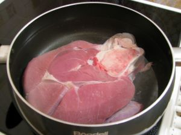
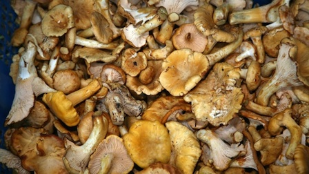
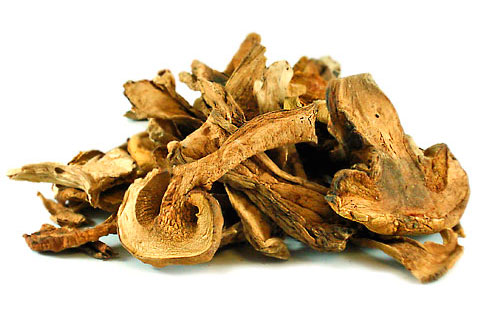
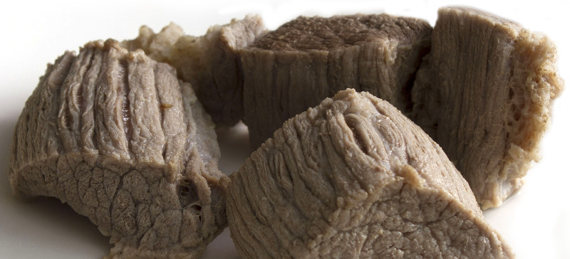
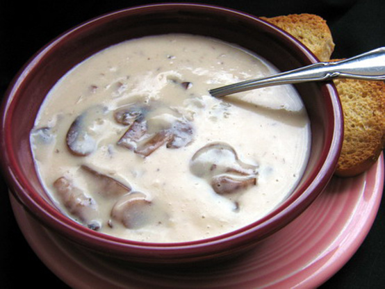

 Boil beef in water. Separate and discard excess fat. Save broth and set aside. Cut meat into bite-size pieces and discard bones.
Soak dehydrated porcini mushrooms in hot water and set aside.
Chop the fresh mushrooms into bite-size pieces. Sautée mushrooms with some salt in olive oil until browned and until most water from the mushrooms has evaporated. Add cracked black pepper and whole green peppercorns if desired. Add flour to make a roux and stir for another minute or two until flour starts turning color.
Add rehydrated porcini mushrooms and water, but carefully discard any sand that might have dropped to the bottom.

Add broth and meat to the mushrooms and boil for about 10 to 15 minutes.
Whip heavy cream and add to the soup right before serving. Season with salt to taste.
Koche das Rindfleisch in Wasser. Entferne das überschüssige Fett und setze die Brühe zur Seite. Schneide das Fleisch in bißgroße Stücke und werfe die Knochen weg.
Weiche die getrockneten Steinpilze für einige Zeit in heißem Wasser ein.
Schneide die frischen Pilze in bißgroße Stücke und brate sie mit etwas Salz in Olivenöl an. Sobald die Pilze anfangen braun zu werden und das Wasser aus den Pilzen weitgehend verdampft ist, können auf Wunsch gemahlener schwarzer Pfeffer und ganze grüne Pfefferkörner dazugegeben werden. Jetzt Mehl dazugeben, um eine Einbrenne zu machen. Hin und wieder umrühren, bis das Mehl nach etwa ein oder zwei Minuten anfängt etwas braun zu werden.
Gib die eingeweichten Steinpilze und deren Wasser in den Topf, aber passe auf, daß keine Steinchen oder Sand mit reinfällt. Der hat sich wahrscheinlich am Boden abgesetzt.
 Gib auch noch die Brühe und das Fleisch mit in den Topf und koche für weitere 10 bis 15 Minuten.
Schlage die Sahne steif und gib sie direkt bevor die Suppe serviert wird mit in den Topf. Schmecke mit Salz ab.